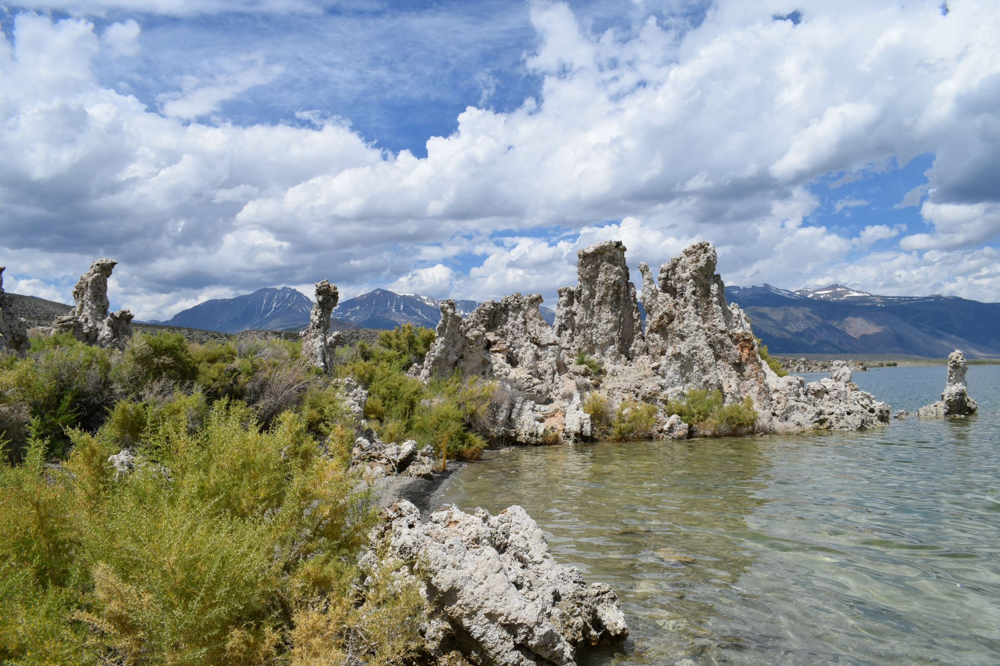
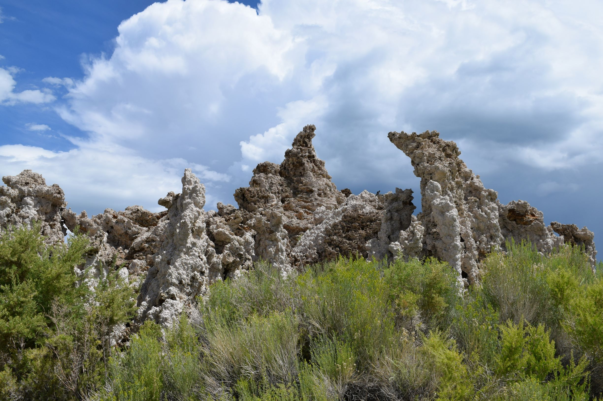
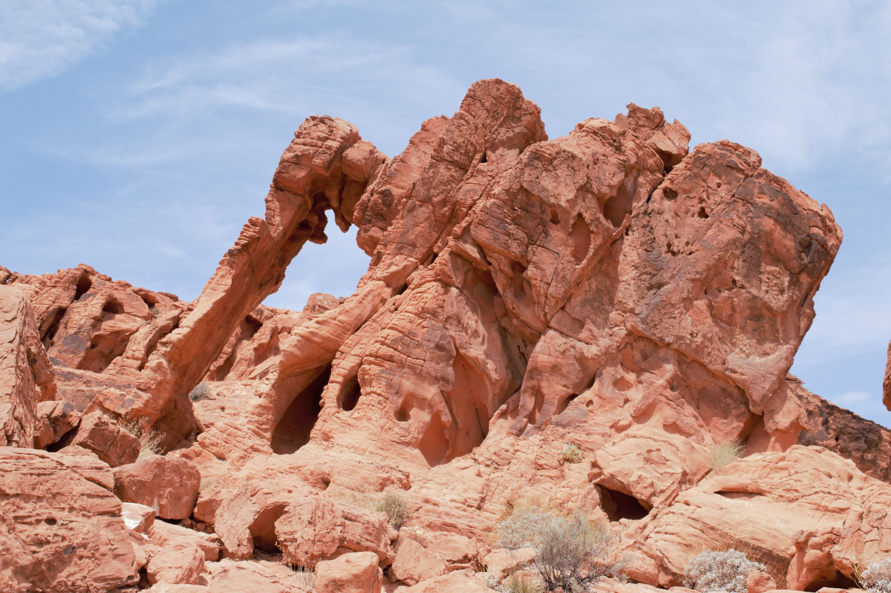
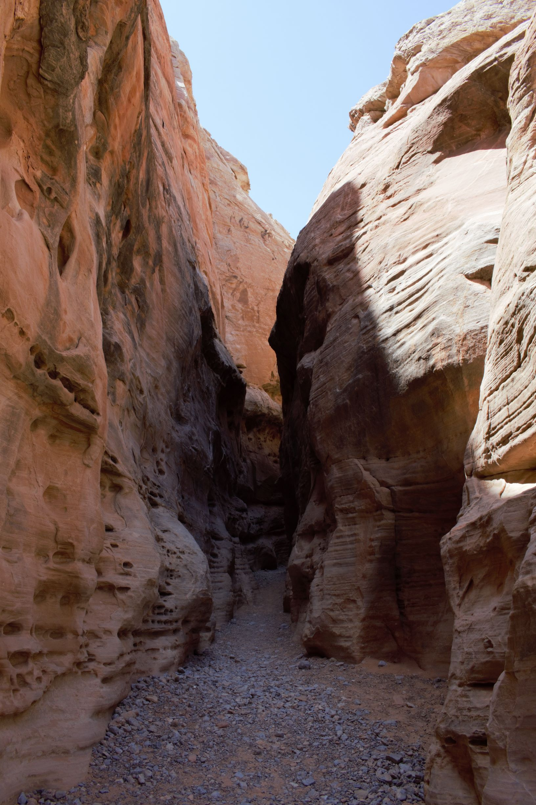
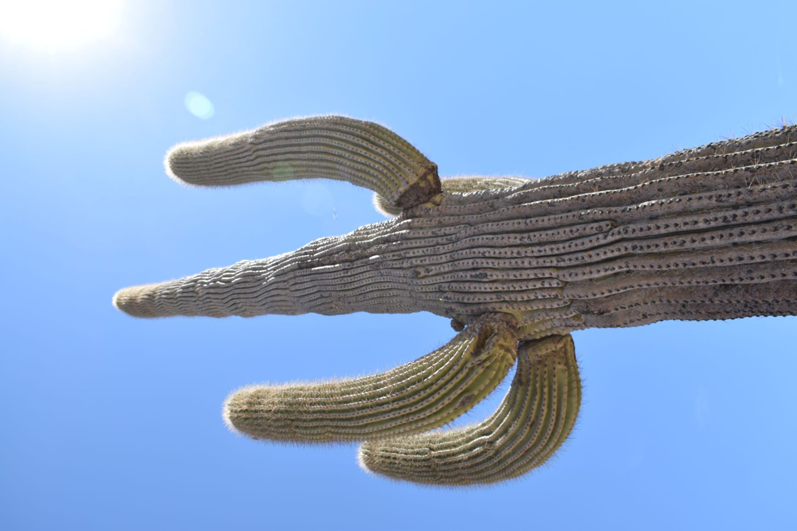
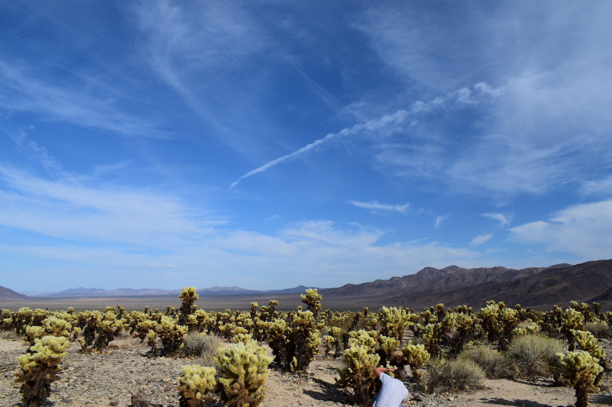
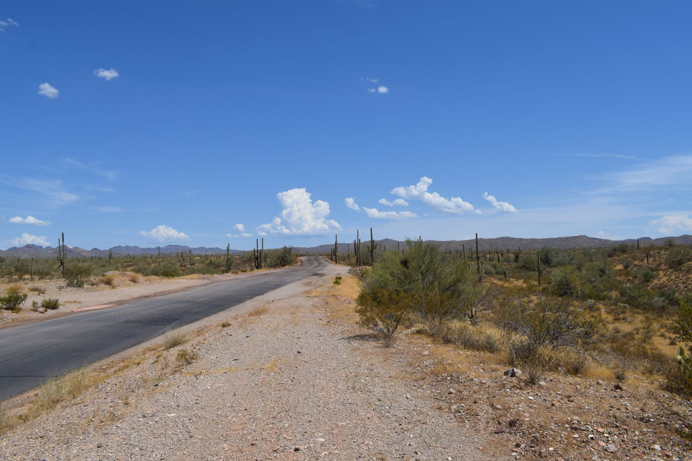

Fotograaf: Tim Schomaker
Camera: Nikon D3300
Lenzen:
Nikon AF-P 18-55mm f/3.5-5.6G VR
Tamron AF 70-300mm f/4-5.6 Di LD
Yosemite Valley: Tioga Pass
Yosemite Valley: Mono Lake
 
Valley of Fire State Park
 
Palm Springs
  